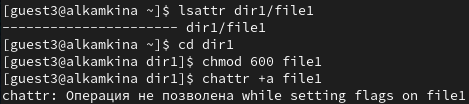
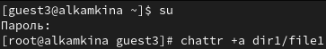
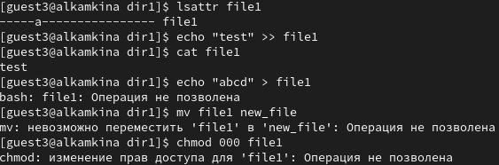
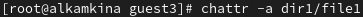
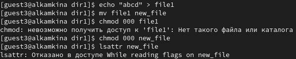
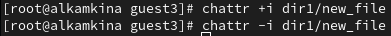
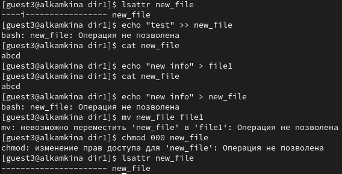

- Камкина Арина Леонидовна
- студентка группы НКНбд-01-21
- Российский университет дружбы народов
- 1032216456@pfur.ru
- https://alkamkina.github.io/ru/

Цель работы:
Получение практических навыков работы в консоли с расширенными атрибутами файлов.
Задачи:
Инструмент: VirtualBox - CentOS, cmd
 { #fig:001 width=70% }
 { #fig:002 width=70% }
 { #fig:003 width=70% }
 { #fig:004 width=70% }
 { #fig:005 width=70% }
 { #fig:006 width=70% }
 { #fig:007 width=70% }
В результате выполнения работы вы повысили свои навыки использования интерфейса командой строки, познакомились на примерах с тем, как используются основные и расширенные атрибуты при разграничении доступа.